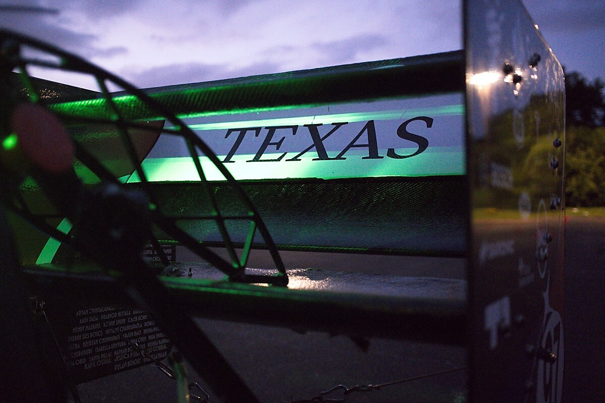

REAR WING DESIGNFall 2024 – Spring 2026
FSAE Rear Wing: CFD to Track
Led the complete rear-wing design from initial concepts through the final manufactured assembly. The work combined aerodynamic trade studies, 2D and 3D CFD, cross-component integration, composite manufacturing, and on-track validation.
View project deck ↗Skills
Low-speed aerodynamic designANSYS FluentParametric sweepsSolidWorksANSYS Mechanical FEACarbon fiber wet layupsVehicle integrationOn-track testingTechnical communicationProject ownership